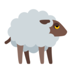
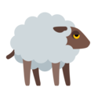
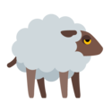
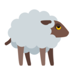

John
A short story.
 



A Shepherd named John tended his master's Sheep near a dark forest not far from the village. Soon he found life in the pasture very dull. All he could do to amuse himself was to talk to his dog or play on his shepherd's pipe.
One day as he sat watching the Sheep and the quiet forest, and thinking what he would do should he see a Wolf, he thought of a plan to amuse himself. His Master had told him to call for help should a Wolf attack the flock, and the Villagers would drive it away. So now, though he had not seen anything that even looked like a Wolf, he ran toward the village shouting at the top of his voice, "Wolf! Wolf!"
As he expected, the Villagers who heard the cry dropped their work and ran in great excitement to the pasture. But when they got there they found the shepard doubled up with laughter at the trick he had played on them. A few days later the Shepherd John again shouted, "Wolf! Wolf!" Again the Villagers ran to help him, only to be laughed at again.
Then one evening as the sun was setting behind the forest and the shadows were creeping out over the pasture, a Wolf really did spring from the underbrush and fall upon the Sheep. In terror John ran toward the village shouting "Wolf! Wolf!" But though the Villagers heard the cry, they did not run to help him as they had before. "He cannot fool us again," they said. The Wolf killed a great many of the John's sheep and then slipped away into the forest.
Liars are not believed even when they speak the truth.